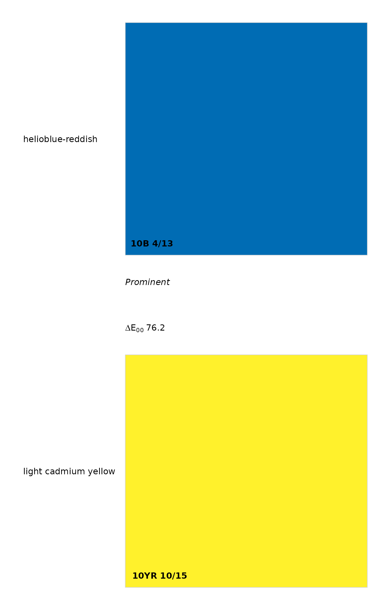

Pair-wise comparisons of Munsell color specifications, based on the NCSS color contrast classes (Soil Survey Technical Note 2) and CIE delta-E 2000 metric.
Value
data.frame with the following columns:
m1: Munsell color 1
m2: Munsell color 2
dH: delta-hue, as computed by
huePositiondV: delta-value, absolute value of difference in Munsell value (m1 vs. m2)
dc: delta-chroma, absolute value of difference in Munsell chroma (m1 vs. m2)
dE00: delta-E00, e.g. the CIE delta-E as refined in 2000
cc: soil color contrast class, as specified in Soil Survey Technical Note 2.
Details
This function is fully vectorized but expects input to be of the same length. Use expand.grid() to generate suitable input from 1:many or many:1 type comparisons. See this tutorial for an expanded discussion and more examples. Neutral colors are not mentioned in SSTN2: in this function any comparison to a neutral color (e.g. 'N 3/') are assigned a delta-hue of 1. Since SSTN2 expects hues to be counted clock wise from 5R, it possible to get very large delta-hue values for otherwise adjacent colors: '5R' vs. '2.5R'. This will be addressed in an update to the standards.
The most meaningful representation of color contrast is the CIE2000 (dE00) metric.
Note
delta-E00 is computed by the farver package.
Examples
# keep examples from using more than 2 cores
data.table::setDTthreads(Sys.getenv("OMP_THREAD_LIMIT", unset = 2))
# two sets of colors to compare
m1 <- c('10YR 6/3', '7.5YR 3/3', '10YR 2/2', '7.5YR 3/4')
m2 <- c('5YR 3/4', '7.5YR 4/4', '2.5YR 2/2', '7.5YR 6/3')
# contrast metrics
colorContrast(m1, m2)
#> m1 m2 dH dV dC dE00 cc
#> 1 10YR 6/3 5YR 3/4 2 3 1 31.286374 Prominent
#> 2 7.5YR 3/3 7.5YR 4/4 0 1 1 9.657423 Faint
#> 3 10YR 2/2 2.5YR 2/2 3 0 0 6.814101 Faint
#> 4 7.5YR 3/4 7.5YR 6/3 0 3 1 30.261643 Distinct
# adjacent chips
colorContrast('10YR 3/3', '10YR 3/4')
#> m1 m2 dH dV dC dE00 cc
#> 1 10YR 3/3 10YR 3/4 0 0 1 3.151168 Faint
colorContrast('10YR 3/3', '7.5YR 3/3')
#> m1 m2 dH dV dC dE00 cc
#> 1 10YR 3/3 7.5YR 3/3 1 0 0 3.313277 Faint
# highly contrasting colors
# http://colour.granjow.net/fabercastell-polychromos.html
colorContrastPlot('10B 4/13', '10YR 10/15',
labels = c('helioblue-reddish', 'light cadmium yellow')
)

## Note: neutral hues aren't defined in TN2
# approximation / extension of the concept
colorContrast(m1 = 'N 3/', m2 = 'N 6/')
#> m1 m2 dH dV dC dE00 cc
#> 1 N 3/ N 6/ 0 3 0 17.20472 Distinct
#
colorContrast(m1 = '10YR 3/3', m2 = 'N 3/')
#> m1 m2 dH dV dC dE00 cc
#> 1 10YR 3/3 N 3/ 1 0 3 22.01338 Prominent
m1 <- c('10YR 6/3', '7.5YR 3/3', '10YR 2/2', 'N 3/')
m2 <- c('5YR 3/4', '7.5YR 4/4', '2.5YR 2/2', '7.5YR 6/3')
colorContrast(m1, m2)
#> m1 m2 dH dV dC dE00 cc
#> 1 10YR 6/3 5YR 3/4 2 3 1 31.286374 Prominent
#> 2 7.5YR 3/3 7.5YR 4/4 0 1 1 9.657423 Faint
#> 3 10YR 2/2 2.5YR 2/2 3 0 0 6.814101 Faint
#> 4 N 3/ 7.5YR 6/3 1 3 3 47.668246 Prominent